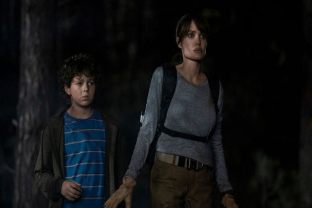
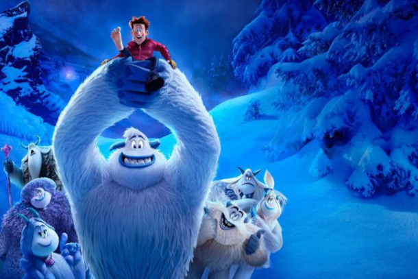

Adão Negro
Adão Negro é o filme solo do anti-herói baseado no personagem dos quadrinhos Black Adam (Dwayne Johnson) da DC Comics, que é o grande antagonista de Shazam! No filme, sua história de origem será explorada, revelando seu passado como escravo no país fictício de Kahndaq. Nascido no Egito Antigo, o anti-herói possui super força, velocidade, resistência, capacidade de voar e de disparar raios, e é o alter ego de Teth-Adam, filho do faraó Ramsés II. Ele foi consumido por poderes mágicos e transformado em um feiticeiro. Apesar de acreditar em seu potencial como um guerreiro do bem, Adão Negro é o grande inimigo de Shazam! nas HQs e acaba usando suas habilidades especiais para o mal. No entanto, o filme explorará se o anti-herói está em busca de redenção ou se é um herói que se tornou vilão, e se ele será capaz de destruir tudo o que estiver pela frente ou de encontrar seu caminho.
Não se Preocupe, Querida
Alice (Pugh) e Jack (Styles) têm a sorte de morarem na comunidade planejada de Vitória, uma cidade experimental que abriga os homens que trabalham no ultrassecreto Projeto Vitória e suas famílias. O otimismo social dos anos 50 de Frank (Pine), CEO do projeto, visionário empresarial e palestrante motivacional, é a base de todos os aspectos do cotidiano desta utopia coesa no meio do deserto. Enquanto os maridos passam os dias na sede do Projeto Vitória "desenvolvendo materiais avançados", suas esposas, incluindo Shelley (Chan), a parceira elegante de Frank, passam o tempo desfrutando da beleza, luxo e estilo boêmio de sua comunidade. A vida é perfeita e a empresa atende às necessidades de cada morador. Tudo o que é pedido em troca é discrição e comprometimento inquestionável com a causa de Vitória.
Elvis
A cinebiografia de Elvis Presley seguirá a vida do artista (interpretado por Austin Butler) por várias décadas, incluindo sua ascensão à fama e seu relacionamento com o empresário "Coronel" Tom Parker (interpretado por Tom Hanks). A história explora a dinâmica entre o cantor e seu empresário durante mais de 20 anos de parceria, mostrando como eles enfrentaram juntos as mudanças constantes na paisagem cultural dos Estados Unidos e a perda gradual da inocência de Elvis como artista. Ao longo de sua jornada e carreira, Elvis também conhece Priscilla Presley (interpretada por Olivia DeJonge), que se torna uma importante fonte de inspiração e uma das pessoas mais significativas em sua vida. A trama se concentra em como a relação com Priscilla e o sucesso profissional de Elvis impactaram sua vida pessoal e como ele lidou com essas mudanças ao longo do tempo.
Voyagers
Durante uma longa viagem espacial, uma nova geração de seres humanos é cuidadosamente criada com o objetivo de garantir a sobrevivência da espécie. No entanto, quando esses indivíduos atingem a juventude, seus impulsos sexuais e agressivos começam a emergir, colocando em risco toda a missão.
Duna
Inspirado nos livros de Frank Herbert, Duna se passa em um futuro distante. O governante do planeta Arrakis, também conhecido como Duna, é o Duque Leto Atreides, onde a única fonte da substância rara chamada "melange" é encontrada. Esta substância é utilizada para prolongar a vida humana, atingir velocidades incríveis e proporcionar poderes sobrenaturais. Para proteger sua família e seu povo, Leto envia seu filho, o jovem brilhante e talentoso Paul Atreides (interpretado por Timothée Chalamet), e seus servos e concubina, a Bene Gesserit Lady Jessica (Rebecca Fergunson), para administrar o planeta. No entanto, uma amarga traição em relação à posse da melange obriga Paul e Jessica a fugir para os Fremen, os nativos do planeta que habitam as áreas mais remotas do deserto.
Jogador Nº 1
No ano de 2045, a Terra está à beira do colapso e a maior parte da população se refugia em um mundo virtual chamado Oasis. Quando o criador do Oasis, James Halliday, morre, ele deixa como herança a quem encontrar um Easter Egg (uma espécie de tesouro virtual) dentro do jogo, o controle total da empresa e de sua fortuna. Wade Watts, um jovem órfão que vive em um dos bairros pobres do mundo real, é obcecado pela busca pelo Easter Egg. Ele usa o avatar Parzival no Oasis e se junta a outros jogadores, incluindo a misteriosa Art3mis, para desvendar as pistas deixadas por Halliday. Mas a caça pelo tesouro se torna perigosa quando um poderoso empresário, Nolan Sorrento, decide usar sua empresa IOI para encontrar o Easter Egg e ganhar o controle do Oasis, mesmo que isso signifique destruí-lo.
Uncharted: Fora do Mapa
Uncharted: Fora do Mapa é uma prequela baseada em uma das séries de videogames mais aclamadas pela crítica e vendidas de todos os tempos. A história segue o jovem explorador Nathan "Nate" Drake, descendente do famoso explorador Francis Drake, antes de se tornar um renomado aventureiro. Ele vive uma vida pacata como bartender, mas tudo muda quando conhece um estranho que se torna um de seus mais confiáveis companheiros. Junto com o sagaz parceiro Victor "Sully" Sullivan, Nate embarca em uma perigosa busca pelo "maior tesouro nunca encontrado" na cidade sul americana de El Dorado, que os levará a uma aventura por todo o mundo enquanto procuram por pistas que podem levar ao irmão perdido de Nathan. Entretanto, eles logo descobrem que estão sendo perseguidos por um grupo de mercenários que também buscam pelo tesouro perdido.
Aqueles Que Me Desejam a Morte
Em Montana, um adolescente se torna testemunha de um homicídio e é forçado a fugir pelas regiões mais selvagens do estado. Ele é perseguido por dois assassinos que farão de tudo para silenciá-lo para sempre. A única chance de sobrevivência do adolescente é uma mulher especialista em técnicas de sobrevivência. Juntos, eles tentam escapar da ameaça mortal que os persegue implacavelmente.
King Richard: Criando Campeãs
King Richard é um emocionante filme biográfico que retrata a inspiradora história de Richard Williams, pai das lendárias tenistas Serena e Venus Williams. Interpretado por Will Smith, Richard é um homem obstinado em transformar suas filhas em campeãs de tênis, usando métodos pouco convencionais e uma visão clara do futuro. Ele está determinado a tirá-las das ruas de Compton e levá-las para as quadras de tênis do mundo todo, traçando um plano ousado para escrever seus nomes na história. Com treinamentos intensos nas quadras negligenciadas de Compton, as meninas são moldadas pelo comprometimento inflexível do pai e a intuição aguçada da mãe, desafiando as probabilidades e superando as expectativas. Sob a orientação cuidadosa e determinação inabalável da família, Serena (interpretada por Demi Singleton) e Venus (interpretada por Saniyya Sidney) se tornam duas das maiores lendas do esporte.
Pé Pequeno
Um yeti, uma criatura conhecida como o Abominável Homem das Neves, se destaca por acreditar no que seus semelhantes consideram impossível: ele tem certeza de que os seres humanos, tidos até então como um mito, realmente existem. Apesar da negação generalizada entre os de sua espécie, ele persiste em sua crença e está determinado a provar sua tese a qualquer custo.